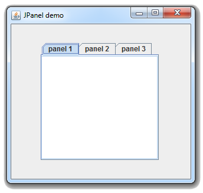
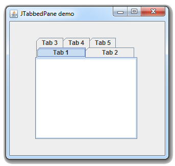
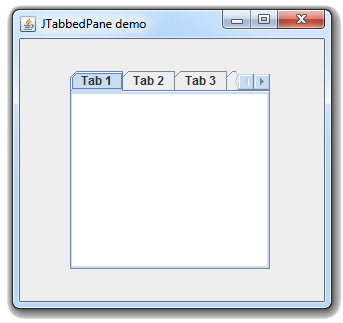
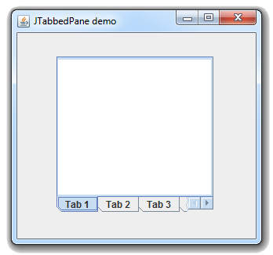
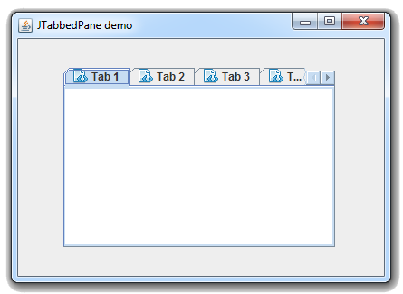
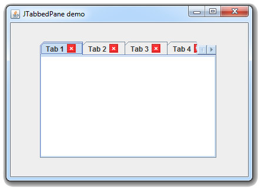

Java Swingالكلاس JTabbedPane
مقدمة
الكلاس JTabbedPane يستخدم لإضافة (Tabbed Pane) في واجهة المستخدم.
الـ Tabbed Pane تستخدم لوضع عدة Panels في مكان واحد مع إمكانية إظهار Panel واحد منهم في وقت واحد.
كل Panel توضع بداخل الـ Tabbed Pane تملك Tab خاص فيها.
عندما يقوم المستخدم بالنقر على الـ Tab فإنها تظهر الـ Panel التي بداخلها.
إفتراضياً, الـ Tabbed Pane يظهر حدود عند إضافته في النافذة. و يمكنك وضع العدد الذي تريده من الـ Panels بداخله.
بناؤه
public class JTabbedPane
extends JComponent
implements Serializable, Accessible, SwingConstan
طريقة التعامل معه
لإضافة Panel في الـ Tabbed Pane نستخدم الدالة addTab() أو الدالة insertTab().
كل Panel تضيفه في الـ Tabbed Pane يتم إعطائه رقم Index بشكل تلقائي.
الـ Panel الأول يحمل الـ Index رقم 0.
الـ Panel الثاني يحمل الـ Index رقم 1 إلخ..
لإظهار Panel محدد من الـ Panels الموجودين إستخدام الدالة setSelectedComponent() أو الدالة setSelectedIndex().
ملاحظة
محتوى الـ Tab ليس بالضرورة أن يكون Panel.
يمكن أن يكون أي شيء مثل Label, Button, Text Box إلخ..
لكنك على الأغلب ستجعل كل Tab يظهر Panel و تضع المحتوى الذي تريده بداخلها.
كونستركتورات الكلاس JTabbedPane
الجدول التالي يحتوي على جميع الكونستركتورات الموجودة في الكلاس JTabbedPane.
| الكونستركتور مع تعريفه |
public JTabbedPane()
ينشئ كائن من الكلاس JTabbedPane يمثل Tabbed Pane فارغ يظهر الـ Tabs التي نضيفها فيه في الأعلى.
سبب ظهور الـ Tabs في الأعلى هو أن الـ Tabbed Pane يستخدم إفتراضياً الثابت JTabbedPane.TOP لتحديد مكان ظهورهم. |
public JTabbedPane(int tabPlacement)
ينشئ كائن من الكلاس JTabbedPane يمثل Tabbed Pane فارغ يظهر الـ Tabs التي نضيفها فيه في المكان الذي نريده.
مكان الباراميتر tabPlacement نضع إحدى الثوابت التالية:
JTabbedPane.TOP: يجعل الـ Tabs يظهرون في أعلا الـ Tabbed Pane.
JTabbedPane.BOTTOM: يجعل الـ Tabs يظهرون في أسفل الـ Tabbed Pane.
JTabbedPane.RIGHT: يجعل الـ Tabs يظهرون في يمين الـ Tabbed Pane.
JTabbedPane.LEFT: يجعل الـ Tabs يظهرون في يسار الـ Tabbed Pane.
يرمي الإستثناء IllegalArgumentException في حال لم يتم تحديد الـ tabPlacement بواسطة الثوابت المخصصة لذلك. |
public JTabbedPane(int tabPlacement, int tabLayoutPolicy)
ينشئ كائن من الكلاس JTabbedPane يمثل Tabbed Pane فارغ يظهر الـ Tabs التي نضيفها فيه في المكان الذي نريده.
كما أنه يحدد إذا كان سيتم إضافة Scroll Bar في حال كانت مساحة الـ Tabbed Pane غير كافية لإظهار جميع الـ Tabs وراء بعضهم. أو لتحديد إذا كان سيضعهم فوق بعضهم كما يفعل إفتراضياً,
مكان الباراميتر tabPlacement نضع إحدى الثوابت التالية:
JTabbedPane.TOP: يجعل الـ Tabs يظهرون في أعلا الـ Tabbed Pane.
JTabbedPane.BOTTOM: يجعل الـ Tabs يظهرون في أسفل الـ Tabbed Pane.
JTabbedPane.RIGHT: يجعل الـ Tabs يظهرون في يمين الـ Tabbed Pane.
JTabbedPane.LEFT: يجعل الـ Tabs يظهرون في يسار الـ Tabbed Pane.
مكان الباراميتر tabLayoutPolicy نضع إحدى الثوابت التالية:
JTabbedPane.WRAP_TAB_LAYOUT: يجعل الـ Tabs يظهرون فوق بعضهم البعض في حال كانت مساحة الـ Tabbed Pane غير كافية لإظهار جميع الـ Tabs وراء بعضهم.
JTabbedPane.SCROLL_TAB_LAYOUT: يضيف Scroll Bar خاص للإنتقال بين الـ Tabs في حال كانت مساحة الـ Tabbed Pane غير كافية لإظهار جميع الـ Tabs وراء بعضهم.
يرمي الإستثناء IllegalArgumentException في حال لم يتم تحديد الـ tabPlacement أو الـ tabLayoutPolicy بواسطة الثوابت المخصصة لذلك. |
أمثلة شاملة
المثال الأول
المثال التالي يعلمك طريقة إنشاء كائن من الكلاس JTabbedPane و إضافة Panels بداخله. ثم إضافته في النافذة.

شاهد المثال »
المثال الثاني
المثال التالي يوضح طريقة ظهور الـ Tabs في حال لم يتم تغيير الـ Tab Layout Policy و كانت مساحة الـ Tabbed Pane غير كافية لإظهار جميع الـ Tabs وراء بعضهم.

شاهد المثال »
المثال الثالث
المثال التالي يعلمك طريقة إظهار Scroll Bar في حال كانت مساحة الـ Tabbed Pane غير كافية لإظهار جميع الـ Tabs وراء بعضهم.

شاهد المثال »
المثال الرابع
المثال التالي يعلمك طريقة إظهار الـ Tabs في أسفل الـ Tabbed Pane و إضافة Scroll Bar في حال كانت مساحة الـ Tabbed Pane غير كافية لإظهار جميع الـ Tabs وراء بعضهم.

شاهد المثال »
المثال الخامس
المثال التالي يعلمك طريقة وضع أيقوانات للـ Tabs.

شاهد المثال »
المثال السادس
المثال التالي يعلمك طريقة إضافة زر إغلاق لكل Tab يتم إضافتها في الـ Tabbed Pane.

شاهد المثال »

 محرر الويب
محرر الويب نظام الألوان
نظام الألوان محول الوحدات
محول الوحدات محلل عناوين الشبكات
محلل عناوين الشبكات